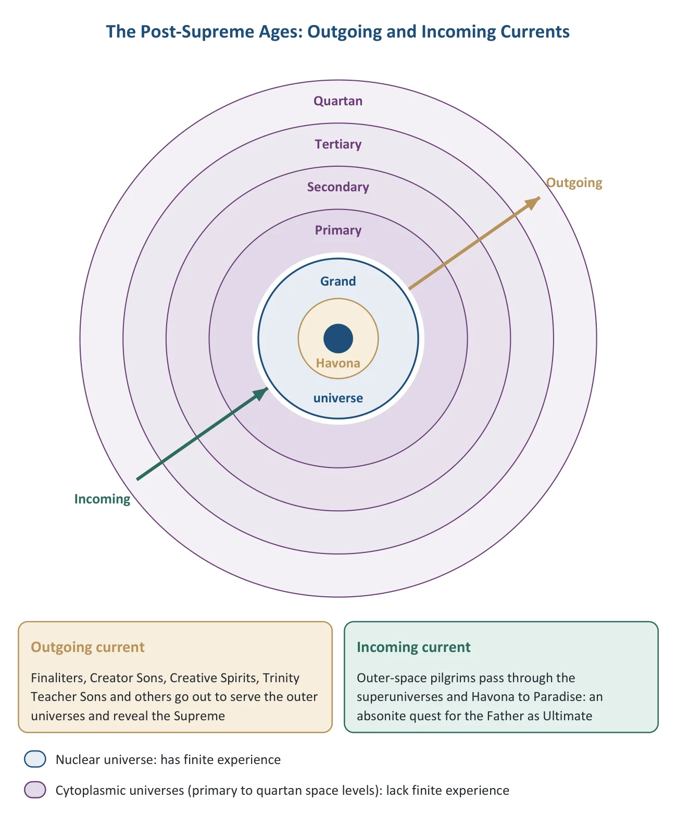

Original: Apéndice XI, Las edades postsupremas (pp. 323–334)
Las edades postsupremas son de la tercera a la sexta edad del universo, en las que los cuatro niveles del espacio exterior se abren uno tras otro. En este apéndice Sadler reúne lo que los documentos revelan y lo que razonablemente puede conjeturarse, y esboza Havona, los superuniversos y Nebadon en la edad venidera, la colaboración de dos Trinidades, nuevas funciones del Ser Supremo y el papel de los finalistas. En el fondo de todo ello se encuentra su idea anterior de un universo nuclear y de universos citoplásmicos: la experiencia finita de la que carecen los universos exteriores se convierte en la oportunidad de servicio para los ciudadanos del gran universo.
Sadler espera que las edades venideras estén marcadas por tres grandes movimientos: un impulso hacia fuera de las personalidades del gran universo hacia el espacio exterior; una búsqueda de Dios el Último, que emerge en esas edades; y un impulso hacia dentro de los seres exteriores que atraviesan los superuniversos y Havona en dirección al Paraíso en busca del Padre Universal como Último.
La cortina del destino cósmico se abrirá para revelar la grandeza trascendental de la atractiva búsqueda absonita por el logro del Padre Universal en aquellos niveles nuevos y más altos revelados en lo último de la experiencia de la criatura.117:7.17
Havona, en la que entró la evolución con la llegada de Grandfanda, cambiará de nuevo en la tercera edad. Los documentos confiesan que no comprenden plenamente por qué hay un Censor Universal estacionado en cada una de los mil millones de esferas de Havona, y sugieren que esto puede anticipar alguna edad futura en la que la población de Havona podría cambiar [19:4.2]. Havona también puede llegar a ser un universo de capacitación para seres absonitos.
Havona tiene la capacidad de servir como universo de capacitación para seres absonitos.14:6.41
El razonamiento de Sadler es el siguiente. Si en la segunda edad Havona, mediante el contacto con los superuniversos imperfectos, rompió los límites de su perfección inherente para obtener un crecimiento experiencial finito, entonces en la tercera edad obtendrá una nueva clase de crecimiento, de carácter superfinito o absonito.
Sadler imagina que, así como unas «zonas de quietud» separan los niveles del espacio, unos «tiempos de quietud» podrían separar las edades del universo, intervalos en los que los grandes cambios que acompañan la emergencia del Ser Supremo puedan consolidarse plenamente. Si así fuera, para el amanecer de la tercera edad los superuniversos llevarían mucho tiempo establecidos en luz y vida. Los documentos dejan claro que tal establecimiento no es el final.
Pero sin ninguna duda, la próxima edad, la edad del primer nivel del espacio exterior, liberará a los superuniversos de las limitaciones de destino de la era presente.106:0.18
Al desaparecer las fronteras de los superuniversos, habrá también un «crecimiento lateral», a medida que la cultura de Orvonton se mezcle con la de los otros seis superuniversos. Sadler ve en ello la síntesis postsuprema de la diversidad que imprimieron primero los Siete Espíritus Rectores.
Las especulaciones de Sadler sobre Nebadon son audaces. El Hijo y el Espíritu del Universo han salido al espacio exterior, y Nebadon ya no es una unidad creativa sino administrativa. Imagina una comisión de regencia formada por Gabriel, el Padre Melquisedek y quizás el Unión de los Días, que gobierna en nombre de Micael. El lugar de los Mensajeros Solitarios lo ocupan los Espíritus Trinitarios Inspirados [19:5.4].
Los nativos de Nebadon nacidos en la tercera edad no tendrán ninguna experiencia finita. Sadler piensa que los «mortales» de esa época podrían eludir la muerte y convertirse de inmediato en espíritus de primera etapa, saltándose por completo la carrera morontial. Con la partida del Hijo Creador y del Espíritu Creativo, la fusión con el Hijo y la fusión con el Espíritu serían difíciles, y solo quedaría la fusión con el Ajustador. Concluye que se abrirá algún nuevo camino de ascensión. Y a medida que el espacio exterior se abra cada vez más, prevé una marea creciente de peregrinos entrantes que acabará superando con mucho a la población nativa del gran universo.

Por primera vez en la historia del universo maestro, dos Trinidades trabajarán lado a lado. Sadler traza dos distinciones entre ellas. Cuando actúa la Trinidad del Paraíso, una Trinidad existencial está cualificando su propia absolutez. La acción de la Trinidad Última es experiencial y no implica tal cualificación, puesto que es la realidad absonita la que trata con la realidad absonita. Conjetura que, a medida que la función de la Trinidad Última se amplíe y su unidad se profundice, la función de la Trinidad del Paraíso retrocederá en la misma medida.
Para hablar de las edades venideras Sadler utiliza los términos «universos interiores» y «universos exteriores». Respecto de las funciones del Ser Supremo, los documentos dicen:
La función terciaria del Supremo en el universo maestro es ahora latente: existe tan sólo como un potencial mental desconocido.116:0.5
El mismo párrafo presenta tres conjeturas lado a lado: que la tercera función implicará el tercer nivel de manifestación de la Deidad; que el Supremo se expandirá en poder como el supertodopoderoso de los universos exteriores; y el potencial mental desconocido mismo. Sadler interpreta la primera como la participación, junto con Dios el Absoluto, en la segunda Trinidad experiencial, y la segunda como la extensión de la actual soberanía superuniversal a las creaciones exteriores. Sobre la tercera, reúne los pasajes acerca de la mente de la Supremacía, otorgada por el Actor Conjunto y focalizada en Majeston.
la mente no cesa jamás de progresar —es la técnica experiencial del progreso sin fin.116:1.5
El crecimiento del cuerpo y del espíritu llega a su límite en los mundos establecidos en luz y vida, pero el crecimiento de la mente no tiene fin. Sadler espera que el Ser Supremo esté activo en los tres dominios: como personalidad espiritual en Havona, como soberano todopoderoso en el gran universo, y mediante alguna nueva función de la mente a lo largo de todo el universo maestro.
Sadler retoma un principio del Apéndice V: las asociaciones de Deidad dual trabajan en las fronteras de la creación, y una vez establecida una frontera la entregan a administradores de origen trinitario. La asociación Padre-Hijo abrió la primera edad y confió Havona a la administración de la Trinidad. La asociación Hijo-Espíritu, tras perfeccionar setecientos mil universos locales en la segunda edad, cederá el paso a administradores de origen trinitario [23:4.4]. ¿Cuál es, entonces, la asociación siguiente?
La asociación Padre-Hijo se ha vuelto Hijo-Espíritu y luego Espíritu-Supremo y sucesivamente Supremo-Último y Último-Absoluto, aun hasta Absoluto y Padre-Infinito —completándose así el ciclo de la realidad.106:8.12
Sadler conjetura que en el espacio exterior aparecerá una nueva asociación entre el Espíritu Infinito y el Ser Supremo, que puede incluir a los Espíritus Rectores y quizás incluso a los Espíritus Creativos. Ya ahora el Espíritu Infinito compensa de muchas maneras la incompletud del Ser Supremo, y el Espíritu Rector Número Siete habla por el Supremo. Aun así, admite que no puede representarse esta asociación en detalle. La expansión de Dios el Séptuple se trata por separado en los Apéndices XII–XIV.
Muchos seres además de los finalistas servirán en los universos exteriores. Los estrechos lazos que se están formando entre los Hijos Creadores, los Espíritus Creativos, las Brillantes Estrellas Vespertinas, los Hijos Instructores y los finalistas sugieren que trabajarán juntos en el espacio exterior [55:10.9]. Sadler conjetura que los Hijos Magisteriales y los Mensajeros Poderosos se unirán algún día a sus filas.
Los propios finalistas no han alcanzado aún su pleno crecimiento.
Estos seres han logrado el límite presente de progresión espiritual pero no la finalidad del estado espiritual último.31:3.6
De las siete dimensiones de la personalidad, ahora desarrollamos solo las tres del nivel finito; las tres del nivel absonito se reservan para el crecimiento futuro [112:1.9]. Por eso Sadler dice que la mayor parte de nuestro crecimiento tendrá lugar después de la edad del Supremo, y que el ascenso al Paraíso y el servicio de los finalistas en el gran universo son, vistos con una perspectiva más amplia, solo una especie de comienzo de jardín de infancia.
El vínculo entre los finalistas y el Ser Supremo se vuelve cada vez más estrecho. Al alcanzar la séptima etapa de existencia espiritual, la mente mortal y la mente del Ajustador se unen con la mente experiencial del Supremo para formar una mente triuna [117:5.3].
En el futuro eterno, Dios el Supremo será actualizado —expresado creativamente y representado espiritualmente— en la mente espiritualizada, el alma inmortal del hombre ascendente, así como en la vida terrestre de Jesús se reveló de este modo el Padre Universal.117:5.4
Sadler cierra este apéndice con el concepto de universos nucleares y citoplásmicos del capítulo IV de su texto principal. En relación con el espacio exterior, el gran universo es el núcleo y los universos exteriores son el citoplasma. Lo que le falta al citoplasma, lo que los universos exteriores no poseen, es la experiencia finita.
Será indudablemente función de los ciudadanos evolucionarios del gran universo compensar a los del espacio exterior por esta deprivación de crecimiento de la Supremacía.117:2.6
Los pueblos del gran universo llevan la esencia del Ser Supremo dentro de su propia naturaleza experiencial, y ese es precisamente el elemento que falta en el espacio exterior. Los finalistas llegan a conocer verdaderamente al Ser Supremo y están destinados a servir y revelar a esta Deidad Suprema en los universos exteriores del futuro [56:8.2].
Sadler señala que el mismo patrón de relación existe en la edad presente. Los seres humanos carecemos de la perfección divina de los seres de Havona y del Paraíso; sin embargo, nuestra misma imperfección y necesidad les dan una oportunidad de servir, y mediante ese servicio traspasan los muros de crecimiento que su perfección creada había levantado a su alrededor. Así como los nativos de Havona crecen ahora ministrándonos a nosotros, en la próxima edad nosotros creceremos ministrando a los seres del espacio exterior. Que en cada edad los habitantes de la edad anterior superen sus antiguos límites es el principio al que Sadler vuelve una y otra vez en este apéndice.